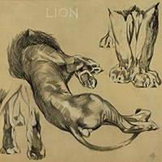
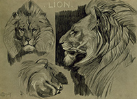

In common with the other large cats of the Old World, the lion has the pupil of the eye circular; but it is at once distinguished from all the other members of the family by the long hair growing on the head, neck, and shoulders of the males to form the flowing mane. This mane varies considerably in size and colour in different individuals. Frequently, although by no means invariably, the long hair of the mane is continued as a fringe down the middle line of the belly. Another distinctive characteristic of the male lion is the brush of long hair at the tip of the tail. In the middle of this brush of hair, at the very extremity of the tail, is a small horny appendage surrounded by a tuft. Much writing has been devoted as to the use of this so-called "thorn" in the lion's tail; one old story being that it was employed to rouse the animal to fury when the tail was lashed against the flanks.
The hair on the remainder of the body of the male lion, and on the whole, of both the head and body in the female, is short and close. In the adults of both sexes the colour of the body-hair is the well-known yellowish-brown, or tawny, but the tint varies in intensity in different individuals. The long hair of the male's mane may vary from tawny to a blackish-brown. Young lion-cubs are marked with transverse dark stripes running down the sides of the body, and likewise by a single stripe of similar tint along the middle of the back. In certain lights more or less faintly marked spots may be observed in many lions nearly or quite up to the period of maturity; these markings, as a rule, being more conspicuous in females than in males. The mane of the male does not make its appearance till the animal is about three years of age, and continues to grow until the age of about six years. Although the full length of the period of a lion's life does not appear known, it has been ascertained that they will live to thirty, and it is said even till forty years.

The material located at this site is not endorsed, sponsored or provided by or on behalf of North Carolina State University. All photographs belong to Siyabona Africa (Pty) Ltd, courtesy of Kruger National Park. Information presented on this site was gathered from Africa Mammals Guide (courtesy of Kruger National Park), The Royal Natural History 1849-1915 (Lydekker), and Wikipedia's entry on the lion.